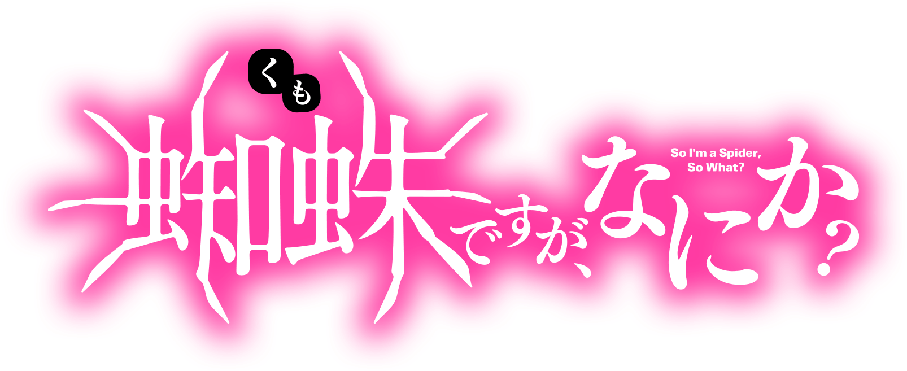

KUMOKO
A high school girl of self-professed low standing who has reincarnated as a spider. In her former life, she lived as a shut-in and immersed herself in video games, but now she uses her remarkable mental strength to fight for survival. She uses battle tactics that make up for her low stats with her mastery of agility, spider thread, and poison fangs.
Kumoko later takes on the name of Shiraori 🔗 (白織) after deification, becomes the Tenth Demon Army commander and the transcended protagonist of the series. After the events of the battle with the G-Fleet, Kumoko was forced to transcend the limits of the System and become a god, losing access to the System, but in return gaining an incredible amount of energy at her disposal as well as the ability to create unique magic. A high school girl of self-professed low standing who has reincarnated as a spider. In her former life, she lived as a shut-in and immersed herself in video games, but Kumoko now she uses her remarkable mental strength to fight for survival. She uses battle tactics that make up for her low stats with her mastery of agility, spider thread, and poison fangs. A high school girl of self-professed low standing who has reincarnated as a spider. In her former life, she lived as a shut-in and immersed herself in video games, but now she uses her remarkable mental strength to fight for survival. She uses battle tactics that make up for her low stats with her mastery of agility, spider thread, and poison fangs.
SHIRAORI
Kumoko later takes on the name of Shiraori 🔗 (白織) after deification, becomes the Tenth Demon Army commander and the transcended protagonist of the series. After the events of the battle with the G-Fleet, Kumoko was forced to transcend the limits of the System and become a god, losing access to the System, but in return gaining an incredible amount of energy at her disposal as well as the ability to create unique magic. A high school girl of self-professed low standing who has reincarnated as a spider.
Shiraori 🔗 came into being when Kumoko eats a GMA Bomb in a panic because it was going to explode, thinking maybe she could digest and absorb it in a similar fashion to Ariel's skill Gluttony. The GMA Bomb was being used as a generator to power a large pre-system flying machine and its army of fighters and robots. Devices that utilized MA Energy as a power source is the technology that led to the destruction of the world and the necessity of the System. After absorbing the MA Energy from the GMA Bomb, Kumoko reaches Divinity Expansion Level 10 and undergoes Apotheosis, transcending the system, and is reborn as Shiraori 🔗 after 47 days.
Shiraori 🔗 came into being when Kumoko eats a GMA Bomb in a panic because it was going to explode, thinking maybe she could digest and absorb it in a similar fashion to Ariel's skill Gluttony. The GMA Bomb was being used as a generator to power a large pre-system flying machine and its army of fighters and robots. Devices that utilized MA Energy as a power source is the technology that led to the destruction of the world and the necessity of the System. After absorbing the MA Energy from the GMA Bomb, Kumoko reaches Divinity Expansion Level 10 and undergoes Apotheosis, transcending the system, and is reborn as Shiraori 🔗 after 47 days.